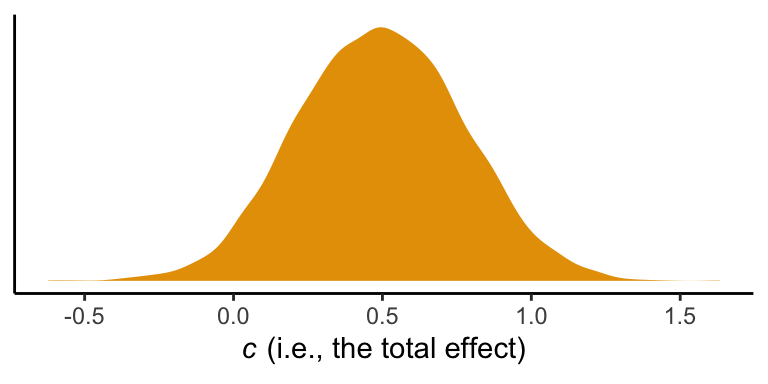

3 The Simple Mediation Model
3.1 Estimation of the direce, indirect, and total effects of \(X\)
3.2 Example with dichotomous \(X\): The influence of presumed media influence
Here we load a couple necessary packages, load the data, and take a peek at them.
library(tidyverse)
pmi <- read_csv("data/pmi/pmi.csv")
glimpse(pmi)
#> Observations: 123
#> Variables: 6
#> $ cond <int> 1, 0, 1, 0, 0, 0, 0, 1, 0, 0, 1, 0, 1, 0, 1, 1, 0, 0, 1, 0, 1, 1, 1, 1, 1, 0, 1, 0, 1, 0...
#> $ pmi <dbl> 7.0, 6.0, 5.5, 6.5, 6.0, 5.5, 3.5, 6.0, 4.5, 7.0, 1.0, 6.0, 5.0, 7.0, 7.0, 7.0, 4.5, 3.5...
#> $ import <int> 6, 1, 6, 6, 5, 1, 1, 6, 6, 6, 3, 3, 4, 7, 1, 6, 3, 3, 2, 4, 4, 6, 7, 4, 5, 4, 6, 5, 5, 7...
#> $ reaction <dbl> 5.25, 1.25, 5.00, 2.75, 2.50, 1.25, 1.50, 4.75, 4.25, 6.25, 1.25, 2.75, 3.75, 5.00, 4.00...
#> $ gender <int> 1, 1, 1, 0, 1, 1, 0, 1, 1, 1, 0, 0, 0, 0, 0, 0, 0, 0, 0, 1, 0, 0, 1, 1, 0, 1, 0, 0, 0, 1...
#> $ age <dbl> 51.0, 40.0, 26.0, 21.0, 27.0, 25.0, 23.0, 25.0, 22.0, 24.0, 22.0, 21.0, 23.0, 21.0, 22.0...You can get the male/female split like so:
pmi %>%
group_by(gender) %>%
count()
#> # A tibble: 2 x 2
#> # Groups: gender [2]
#> gender n
#> <int> <int>
#> 1 0 80
#> 2 1 43Here is the split by condition:
pmi %>%
group_by(cond) %>%
count()
#> # A tibble: 2 x 2
#> # Groups: cond [2]
#> cond n
#> <int> <int>
#> 1 0 65
#> 2 1 58Here is how to get the ungrouped mean and SD values for reaction and pmi, as presented in Table 3.1,
pmi %>%
select(reaction, pmi) %>%
gather() %>%
group_by(key) %>%
summarise(mean = mean(value),
sd = sd(value)) %>%
mutate_if(is.double, round, digits = 3)
#> # A tibble: 2 x 3
#> key mean sd
#> <chr> <dbl> <dbl>
#> 1 pmi 5.60 1.32
#> 2 reaction 3.48 1.55You might get the mean and SD values for reaction and pmi grouped by cond like this:
pmi %>%
select(reaction, pmi, cond) %>%
gather(key, value, -cond) %>%
group_by(cond, key) %>%
summarise(mean = mean(value),
sd = sd(value)) %>%
mutate_if(is.double, round, digits = 3)
#> # A tibble: 4 x 4
#> # Groups: cond [2]
#> cond key mean sd
#> <int> <chr> <dbl> <dbl>
#> 1 0 pmi 5.38 1.34
#> 2 0 reaction 3.25 1.61
#> 3 1 pmi 5.85 1.27
#> 4 1 reaction 3.75 1.45Let’s load our primary statistical package.
library(brms)Before we begin, I should acknowledge that I greatly benefited by this great blog post on path analysis in brms by Jarrett Byrnes. In brms, we handle mediation models using the multivariate syntax. There are a few ways to do this. Let’s start simple.
If you look at the path model in Figure 3.3, you’ll note that reaction is predicted by pmi and cond. pmi, in turn, is predicted solely by cond. So we have two regression models, which is just the kind of thing the brms multivariate syntax is for. So first let’s specify both models, which we’ll nest in bf() functions and save as objects.
y_model <- bf(reaction ~ 1 + pmi + cond)
m_model <- bf(pmi ~ 1 + cond)Now we have our bf() objects in hand, we’ll combine them with the + operator within the brm() function. We’ll also specify set_rescor(FALSE)–we’re not interested in adding a residual correlation between reaction and pmi.
model1 <-
brm(data = pmi, family = gaussian,
y_model + m_model + set_rescor(FALSE),
chains = 4, cores = 4)Here are our results.
print(model1)
#> Family: MV(gaussian, gaussian)
#> Links: mu = identity; sigma = identity
#> mu = identity; sigma = identity
#> Formula: reaction ~ 1 + pmi + cond
#> pmi ~ 1 + cond
#> Data: pmi (Number of observations: 123)
#> Samples: 4 chains, each with iter = 2000; warmup = 1000; thin = 1;
#> total post-warmup samples = 4000
#>
#> Population-Level Effects:
#> Estimate Est.Error l-95% CI u-95% CI Eff.Sample Rhat
#> reaction_Intercept 0.52 0.55 -0.53 1.58 4000 1.00
#> pmi_Intercept 5.38 0.17 5.05 5.71 4000 1.00
#> reaction_pmi 0.51 0.10 0.32 0.69 4000 1.00
#> reaction_cond 0.25 0.26 -0.25 0.75 4000 1.00
#> pmi_cond 0.48 0.24 0.01 0.96 4000 1.00
#>
#> Family Specific Parameters:
#> Estimate Est.Error l-95% CI u-95% CI Eff.Sample Rhat
#> sigma_reaction 1.41 0.09 1.24 1.61 4000 1.00
#> sigma_pmi 1.32 0.09 1.17 1.50 4000 1.00
#>
#> Samples were drawn using sampling(NUTS). For each parameter, Eff.Sample
#> is a crude measure of effective sample size, and Rhat is the potential
#> scale reduction factor on split chains (at convergence, Rhat = 1).If you compare our model summary with the coefficients in the path model in Figure 3.3, you’ll see our coefficients are the same. The brms summary also includes intercepts and residual variances, which are typically omitted in path diagrams even though they’re still part of the model.
If you’re getting lost in all the model output, try this.
fixef(model1)[3:5, ] %>% round(digits = 3)
#> Estimate Est.Error Q2.5 Q97.5
#> reaction_pmi 0.508 0.096 0.322 0.694
#> reaction_cond 0.253 0.259 -0.250 0.748
#> pmi_cond 0.477 0.244 0.007 0.957Also note that Hayes tends to refer to the intercepts as constants.
In his Table 3.2, Hayes included the \(R^2\) values. Here are ours.
bayes_R2(model1) %>% round(digits = 3)
#> Estimate Est.Error Q2.5 Q97.5
#> R2_reaction 0.210 0.056 0.102 0.316
#> R2_pmi 0.039 0.032 0.000 0.116It’s worth it to actually plot the \(R^2\) distributions.
# we'll get our color palette from ggthemes
library(ggthemes)
bayes_R2(model1, summary = F) %>%
as_tibble() %>%
gather() %>%
ggplot(aes(x = value, fill = key)) +
geom_density(color = "transparent", alpha = 2/3) +
scale_fill_colorblind() + # we got this color palette from the ggthemes package
coord_cartesian(xlim = 0:1) +
labs(title = expression(paste("The ", italic("R")^{2}, " distributions for fit0")),
x = NULL) +
theme_classic()
We went through the trouble of plotting the \(R^2\) distributions because it’s useful to understand that they won’t often be symmetric when they’re near their logical boundaries (i.e., 0 and 1). This is where asymmetric Bayesian credible intervals can really shine.
Let’s get down to business and examine the indirect effect, the \(ab\) pathway. In our model:
- \(a\) =
pmi_cond - \(b\) =
reaction_pmi
You can isolate them with fixef()[i].
fixef(model1)[5 , ]
#> Estimate Est.Error Q2.5 Q97.5
#> 0.47668 0.24440 0.00721 0.95700
fixef(model1)[3 , ]
#> Estimate Est.Error Q2.5 Q97.5
#> 0.5077 0.0959 0.3223 0.6941So the naive approach would be to just multiply them.
(fixef(model1)[5 , ] * fixef(model1)[3 , ]) %>% round(digits = 3)
#> Estimate Est.Error Q2.5 Q97.5
#> 0.242 0.023 0.002 0.664Now, this does get us the correct ‘Estimate’ (i.e., posterior mean). However, the posterior SD and 95% intervals are off. If you want to do this properly, you need to work with the poster samples themselves. Here they are:
post <- posterior_samples(model1)
glimpse(post)
#> Observations: 4,000
#> Variables: 8
#> $ b_reaction_Intercept <dbl> -0.0751, 0.6081, 1.2556, 0.1603, 0.5602, 0.9165, 0.6553, 1.6509, -0.2385, -0...
#> $ b_pmi_Intercept <dbl> 5.42, 5.39, 5.34, 5.22, 5.31, 5.18, 5.51, 5.37, 5.50, 5.67, 5.09, 5.62, 5.17...
#> $ b_reaction_pmi <dbl> 0.620, 0.478, 0.426, 0.548, 0.516, 0.442, 0.440, 0.293, 0.636, 0.601, 0.412,...
#> $ b_reaction_cond <dbl> 0.3907, 0.2704, -0.0605, 0.1839, 0.3621, 0.3386, 0.4139, 0.0900, 0.6226, 0.7...
#> $ b_pmi_cond <dbl> 0.4195, 0.6181, 0.3631, 0.7494, 0.3181, 0.7329, 0.1759, 0.7270, 0.0878, 0.24...
#> $ sigma_reaction <dbl> 1.41, 1.39, 1.49, 1.29, 1.38, 1.48, 1.45, 1.47, 1.37, 1.51, 1.34, 1.47, 1.35...
#> $ sigma_pmi <dbl> 1.24, 1.43, 1.21, 1.41, 1.33, 1.25, 1.28, 1.47, 1.18, 1.30, 1.30, 1.36, 1.35...
#> $ lp__ <dbl> -433, -433, -435, -434, -433, -433, -434, -438, -437, -436, -435, -435, -435...Here we compute the indirect effect, ab.
post <-
post %>%
mutate(ab = b_pmi_cond*b_reaction_pmi)Now we have ab as a properly computed vector, we can summarize it with the quantile() function.
quantile(post$ab, probs = c(.5, .025, .975)) %>%
round(digits = 3)
#> 50% 2.5% 97.5%
#> 0.235 0.004 0.522And we can even visualize it as a density.
post %>%
ggplot(aes(x = ab)) +
geom_density(color = "transparent",
fill = colorblind_pal()(3)[3]) +
scale_y_continuous(NULL, breaks = NULL) +
labs(title = expression(paste("Our indirect effect, the ", italic("ab"), " pathway")),
x = NULL) +
theme_classic()
It’s also worth pointing out that as the indirect effect isn’t perfectly symmetric, its mean and median aren’t quite the same.
post %>%
summarize(mean = mean(ab),
median = median(ab)) %>%
round(digits = 3)
#> mean median
#> 1 0.242 0.235Their magnitudes are similar, but this asymmetry will be a source of contrast to our estimates and those in the text. This is also something to consider when reporting on central tendency. When the indirect effect–or any other parameter, for that matter–is quite asymmetric, you might prefer reporting the median rather than the mean.
On page 90, Hayes computed the adjusted means for \(Y\). For both cond == 1 and cond == 0, he computed the expected values for reaction when pmi was at its mean. A natural way to do that in brms is with fitted(). First we’ll put our input values for cond and pmi in a tibble, which we’ll call nd. Then we’ll feed nd into the newdata argument within the fitted() function.
nd <-
tibble(cond = 1:0,
pmi = mean(pmi$pmi))
fitted(model1, newdata = nd)
#> , , reaction
#>
#> Estimate Est.Error Q2.5 Q97.5
#> [1,] 3.62 0.190 3.25 4.00
#> [2,] 3.37 0.176 3.03 3.72
#>
#> , , pmi
#>
#> Estimate Est.Error Q2.5 Q97.5
#> [1,] 5.86 0.182 5.50 6.21
#> [2,] 5.38 0.169 5.05 5.71Because model1 is a multivariate model, fitted() returns the model-implied summaries for both reaction and pmi. If you just want the adjusted means for reaction, you can use the resp argument within fitted().
fitted(model1, newdata = nd, resp = "reaction") %>% round(digits = 3)
#> Estimate Est.Error Q2.5 Q97.5
#> [1,] 3.62 0.190 3.25 4.00
#> [2,] 3.37 0.176 3.03 3.72Note how this is where the two values in the \(Y\) adjusted column in Table 3.1 came from.
However, if we want to reproduce how Hayes computed the total effect (i.e. \(c'\) + \(ab\)), we’ll need to work with the posterior itself, post. Recall, we’ve already saved the indirect effect as a vector, ab. The direct effect, \(c'\), is labeled b_reaction_cond within post. in order to get the total effect, \(c\), all we need to is add those vectors together.
post <-
post %>%
mutate(total_effect = b_reaction_cond + ab)Here’s the posterior mean with its 95% intervals
post %>%
summarize(mean = mean(total_effect),
ll = quantile(total_effect, prob = .025),
ul = quantile(total_effect, prob = .975))
#> mean ll ul
#> 1 0.495 -0.0704 1.083.2.1 Estimation of the model in PROCESS for SPSS and SAS.
Nothing new for us, here.
3.3 Statistical inference
3.3.1 Inference about the total effect of \(X\) on \(Y\).
3.3.2 Inference about the direct effect of \(X\) on \(Y\).
In this section, Hayes provides a \(t\)-test and corresponding \(p\)-value for the direct effect (i.e., \(c'\), b_reaction_cond). Instead of the \(t\)-test, we can just look at the posterior distribution.
post %>%
ggplot(aes(x = b_reaction_cond)) +
geom_density(color = "transparent",
fill = colorblind_pal()(4)[4]) +
geom_vline(xintercept = 0, color = "white", linetype = 2) +
scale_y_continuous(NULL, breaks = NULL) +
labs(title = expression(paste("Yep, 0 is a credible value for ", italic("c"), ".")),
x = NULL) +
theme_classic()
If you wanted to quantify what proportion of the density was less than 0, you could do:
post %>%
summarize(proportion_below_zero = filter(., b_reaction_cond < 0) %>% nrow()/nrow(.))
#> proportion_below_zero
#> 1 0.17This is something like a Bayesian \(p\)-value. But of course, you could always just look at the posterior intervals.
posterior_interval(model1)["b_reaction_cond", ]
#> 2.5% 97.5%
#> -0.250 0.7483.3.3 Inference about the indirect of \(X\) on \(Y\) through \(M\).
3.3.3.1 The normal theory approach.
This is not our approach.
3.3.3.2 Bootstrap confidence interval.
This is not our approach.
However, Markov chain Monte Carlo (MCMC) methods are iterative and share some characteristics with boostrapping. On page 98, Hayes outlined 6 steps for constructing the \(ab\) bootstrap confidence interval. Here are our responses to those steps w/r/t Bayes with MCMC–or in our case HMC (i.e., Hamiltonian Monte Carlo).
If HMC or MCMC, in general, are new to you, you might check out this lecture or the Stan reference manual if you’re more technically oriented.
Anyway, Hayes’s 6 steps:
3.3.3.2.1 Step 1.
With HMC we do not take random samples of the data themselves. Rather, we take random draws from the posterior distribution. The posterior distribution is the joint probability distribution of our model.
3.3.3.2.2 Step 2.
After we fit our model with the brm() function and save our posterior draws in a data frame (i.e., post <- posterior_samples(my_model_fit)), we then make a new column (a.k.a. vector, variable) that is the product of our coefficients for the \(a\) and \(b\) pathways. In the example above, this looked like post %>% mutate(ab = b_pmi_cond*b_reaction_pmi). Let’s take a look at those columns.
post %>%
select(b_pmi_cond, b_reaction_pmi, ab) %>%
slice(1:10)
#> b_pmi_cond b_reaction_pmi ab
#> 1 0.4195 0.620 0.2602
#> 2 0.6181 0.478 0.2954
#> 3 0.3631 0.426 0.1546
#> 4 0.7494 0.548 0.4107
#> 5 0.3181 0.516 0.1643
#> 6 0.7329 0.442 0.3238
#> 7 0.1759 0.440 0.0774
#> 8 0.7270 0.293 0.2131
#> 9 0.0878 0.636 0.0558
#> 10 0.2452 0.601 0.1473Our data frame, post, has 4000 rows. Why 4000? By default, brms runs 4 HMC chains. Each chain has 2000 iterations, 1000 of which are warmups, which we always discard. As such, there are 1000 good iterations left in each chain and \(1000\times4 = 4000\). We can change these defaults as needed. At this point in the project, the default settings have been fine.
Each row in post contains the parameter values based on one of those draws. And again, these are draws from the posterior distribution. They are not draws from the data.
3.3.3.2.3 Step 3.
We don’t refit the model \(k\) times based on the samples from the data. We take a number of draws from the posterior distribution. Hayes likes to take 5000 samples when he bootstraps. Happily, that number is quite similar to our 4000 HMC draws. Whether 5000, 4000 or 10,000, these are all large enough numbers that the distributions become fairly stable. With HMC, however, you might want to increase the number of iterations if the effective sample size, ‘Eff.Sample’ in the print() output, is substantially smaller than the number of iterations.
3.3.3.2.4 Step 4.
When we use the quantile() function to compute our Bayesian credible intervals, we’ve sorted. Conceptually, we’ve done this:
post %>%
select(ab) %>%
arrange(ab) %>%
slice(1:10)
#> ab
#> 1 -0.1366
#> 2 -0.1217
#> 3 -0.1179
#> 4 -0.1068
#> 5 -0.1068
#> 6 -0.1056
#> 7 -0.1042
#> 8 -0.1027
#> 9 -0.0994
#> 10 -0.09743.3.3.2.5 Step 5.
Yes, this is what we do, too.
ci <- 95
.5*(100 - ci)
#> [1] 2.53.3.3.2.6 Step 6.
This is also what we do.
ci <- 95
(100 - .5*(100 - ci))
#> [1] 97.5Also, notice the headers in the rightmost two columns in our posterior_summary() output:
posterior_summary(model1)
#> Estimate Est.Error Q2.5 Q97.5
#> b_reaction_Intercept 0.524 0.5487 -5.28e-01 1.581
#> b_pmi_Intercept 5.379 0.1687 5.05e+00 5.715
#> b_reaction_pmi 0.508 0.0959 3.22e-01 0.694
#> b_reaction_cond 0.253 0.2594 -2.50e-01 0.748
#> b_pmi_cond 0.477 0.2444 7.21e-03 0.957
#> sigma_reaction 1.409 0.0915 1.24e+00 1.605
#> sigma_pmi 1.320 0.0851 1.17e+00 1.501
#> lp__ -434.914 1.9037 -4.39e+02 -432.185Those .025 and .975 quantiles from above are just what brms is giving us in our 95% Bayesian credible intervals.
Here’s our version of Figure 3.5
# these will come in handy in the subtitle
ll <- quantile(post$ab, probs = .025) %>% round(digits = 3)
ul <- quantile(post$ab, probs = .975) %>% round(digits = 3)
post %>%
ggplot(aes(x = ab)) +
geom_histogram(color = "white", size = .25,
fill = colorblind_pal()(5)[5],
binwidth = .025, boundary = 0) +
geom_vline(xintercept = quantile(post$ab, probs = c(.025, .975)),
linetype = 3, color = colorblind_pal()(6)[6]) +
labs(x = expression(paste("Indirect effect (", italic("ab"), ")")),
y = "Frequency in 4,000 HMC posterior draws",
subtitle = paste("95% of the posterior draws are between", ll, "and", ul)) +
theme_classic()Again, as Hayes discussed how to specify different types of intervals in PROCESS on page 102, you can ask for different kinds of intervals in your print() or summary() output with the probs argument, just as you can with quantile() when working directly with the posterior draws.
Hayes discussed setting the seed in PROCESS on page 104. You can do this with the seed argument in the brm() function, too.
3.3.3.3 Alternative “asymmetric” confidence interval approaches.
This section does not quite refer to us. I’m a little surprised Hayes didn’t at least dedicate a paragraph or two mentioning Bayesian estimation. Sure, he mentioned Monte Carlo, but not within the context of Bayes. So it goes…
3.4 An example with continuous \(X\): Economic stress among small-business owners
Here’s the estress data.
estress <- read_csv("data/estress/estress.csv")
glimpse(estress)
#> Observations: 262
#> Variables: 7
#> $ tenure <dbl> 1.67, 0.58, 0.58, 2.00, 5.00, 9.00, 0.00, 2.50, 0.50, 0.58, 9.00, 1.92, 2.00, 1.42, 0.92...
#> $ estress <dbl> 6.0, 5.0, 5.5, 3.0, 4.5, 6.0, 5.5, 3.0, 5.5, 6.0, 5.5, 4.0, 3.0, 2.5, 3.5, 6.0, 4.0, 6.0...
#> $ affect <dbl> 2.60, 1.00, 2.40, 1.16, 1.00, 1.50, 1.00, 1.16, 1.33, 3.00, 3.00, 2.00, 1.83, 1.16, 1.16...
#> $ withdraw <dbl> 3.00, 1.00, 3.66, 4.66, 4.33, 3.00, 1.00, 1.00, 2.00, 4.00, 4.33, 1.00, 5.00, 1.66, 4.00...
#> $ sex <int> 1, 0, 1, 1, 1, 1, 0, 0, 1, 1, 1, 1, 1, 1, 1, 1, 1, 1, 0, 0, 0, 1, 1, 1, 0, 1, 0, 0, 0, 1...
#> $ age <int> 51, 45, 42, 50, 48, 48, 51, 47, 40, 43, 57, 36, 33, 29, 33, 48, 40, 45, 37, 42, 54, 57, ...
#> $ ese <dbl> 5.33, 6.05, 5.26, 4.35, 4.86, 5.05, 3.66, 6.13, 5.26, 4.00, 2.53, 6.60, 5.20, 5.66, 5.66...The model set up is just like before. There are no complications switching from a binary \(X\) variable to a continuous one.
y_model <- bf(withdraw ~ 1 + estress + affect)
m_model <- bf(affect ~ 1 + estress)With our y_model and m_model defined, we’re ready to fit.
model2 <-
brm(data = estress, family = gaussian,
y_model + m_model + set_rescor(FALSE),
chains = 4, cores = 4)Let’s take a look.
print(model2, digits = 3)
#> Family: MV(gaussian, gaussian)
#> Links: mu = identity; sigma = identity
#> mu = identity; sigma = identity
#> Formula: withdraw ~ 1 + estress + affect
#> affect ~ 1 + estress
#> Data: estress (Number of observations: 262)
#> Samples: 4 chains, each with iter = 2000; warmup = 1000; thin = 1;
#> total post-warmup samples = 4000
#>
#> Population-Level Effects:
#> Estimate Est.Error l-95% CI u-95% CI Eff.Sample Rhat
#> withdraw_Intercept 1.446 0.256 0.954 1.949 4000 1.000
#> affect_Intercept 0.801 0.146 0.520 1.088 4000 1.000
#> withdraw_estress -0.077 0.052 -0.178 0.025 4000 0.999
#> withdraw_affect 0.771 0.104 0.564 0.972 4000 1.000
#> affect_estress 0.173 0.030 0.114 0.231 4000 1.000
#>
#> Family Specific Parameters:
#> Estimate Est.Error l-95% CI u-95% CI Eff.Sample Rhat
#> sigma_withdraw 1.138 0.051 1.043 1.246 4000 0.999
#> sigma_affect 0.685 0.030 0.630 0.747 4000 1.000
#>
#> Samples were drawn using sampling(NUTS). For each parameter, Eff.Sample
#> is a crude measure of effective sample size, and Rhat is the potential
#> scale reduction factor on split chains (at convergence, Rhat = 1).The ‘Eff.Sample’ and ‘Rhat’ values look great. Happily, the values in our summary cohere well with those Hayes reported in Table 3.5. Here are our \(R^2\) values.
bayes_R2(model2)
#> Estimate Est.Error Q2.5 Q97.5
#> R2_withdraw 0.183 0.0386 0.1080 0.258
#> R2_affect 0.117 0.0350 0.0535 0.187These are also quite similar to those in the text. Here’s our indirect effect.
# putting the posterior draws into a data frame
post <- posterior_samples(model2)
# computing the ab coefficient with multiplication
post <-
post %>%
mutate(ab = b_affect_estress*b_withdraw_affect)
# getting the posterior median and 95% intervals with `quantile()`
quantile(post$ab, probs = c(.5, .025, .975)) %>% round(digits = 3)
#> 50% 2.5% 97.5%
#> 0.131 0.081 0.194We can visualize its shape, median, and 95% intervals in a density plot.
post %>%
ggplot(aes(x = ab)) +
geom_density(color = "transparent",
fill = colorblind_pal()(7)[7]) +
geom_vline(xintercept = quantile(post$ab, probs = c(.025, .5, .975)),
color = "white", linetype = c(2, 1, 2), size = c(.5, .8, .5)) +
scale_x_continuous(breaks = quantile(post$ab, probs = c(.025, .5, .975)),
labels = quantile(post$ab, probs = c(.025, .5, .975)) %>% round(2) %>% as.character()) +
scale_y_continuous(NULL, breaks = NULL) +
labs(title = expression(paste("Behold our ", italic("ab"), "!")),
x = NULL) +
theme_classic()
Here’s \(c'\), the direct effect of esterss predicting withdraw.
posterior_summary(model2)["b_withdraw_estress", ]
#> Estimate Est.Error Q2.5 Q97.5
#> -0.0771 0.0523 -0.1783 0.0247It has wide flapping intervals which do straddle zero. A little addition will give us the direct effect, \(c\).
post <-
post %>%
mutate(c = b_withdraw_estress + ab)
quantile(post$c, probs = c(.5, .025, .975)) %>% round(digits = 3)
#> 50% 2.5% 97.5%
#> 0.056 -0.050 0.162Session info
sessionInfo()
#> R version 3.5.1 (2018-07-02)
#> Platform: x86_64-apple-darwin15.6.0 (64-bit)
#> Running under: macOS High Sierra 10.13.4
#>
#> Matrix products: default
#> BLAS: /Library/Frameworks/R.framework/Versions/3.5/Resources/lib/libRblas.0.dylib
#> LAPACK: /Library/Frameworks/R.framework/Versions/3.5/Resources/lib/libRlapack.dylib
#>
#> locale:
#> [1] en_US.UTF-8/en_US.UTF-8/en_US.UTF-8/C/en_US.UTF-8/en_US.UTF-8
#>
#> attached base packages:
#> [1] stats graphics grDevices utils datasets methods base
#>
#> other attached packages:
#> [1] ggthemes_3.5.0 brms_2.3.4 Rcpp_0.12.17 bindrcpp_0.2.2 forcats_0.3.0 stringr_1.3.1
#> [7] dplyr_0.7.6 purrr_0.2.5 readr_1.1.1 tidyr_0.8.1 tibble_1.4.2 ggplot2_3.0.0
#> [13] tidyverse_1.2.1
#>
#> loaded via a namespace (and not attached):
#> [1] nlme_3.1-137 matrixStats_0.53.1 xts_0.10-2 lubridate_1.7.4 threejs_0.3.1
#> [6] httr_1.3.1 rprojroot_1.3-2 rstan_2.17.3 tools_3.5.1 backports_1.1.2
#> [11] utf8_1.1.4 R6_2.2.2 DT_0.4 lazyeval_0.2.1 colorspace_1.3-2
#> [16] withr_2.1.2 tidyselect_0.2.4 gridExtra_2.3 mnormt_1.5-5 Brobdingnag_1.2-5
#> [21] compiler_3.5.1 cli_1.0.0 rvest_0.3.2 shinyjs_1.0 xml2_1.2.0
#> [26] labeling_0.3 colourpicker_1.0 bookdown_0.7 scales_0.5.0 dygraphs_1.1.1.5
#> [31] mvtnorm_1.0-8 psych_1.8.4 ggridges_0.5.0 digest_0.6.15 StanHeaders_2.17.2
#> [36] foreign_0.8-70 rmarkdown_1.10 base64enc_0.1-3 pkgconfig_2.0.1 htmltools_0.3.6
#> [41] htmlwidgets_1.2 rlang_0.2.1 readxl_1.1.0 rstudioapi_0.7 shiny_1.1.0
#> [46] bindr_0.1.1 zoo_1.8-2 jsonlite_1.5 gtools_3.8.1 crosstalk_1.0.0
#> [51] inline_0.3.15 magrittr_1.5 loo_2.0.0 bayesplot_1.5.0 Matrix_1.2-14
#> [56] munsell_0.5.0 abind_1.4-5 stringi_1.2.3 yaml_2.1.19 plyr_1.8.4
#> [61] grid_3.5.1 parallel_3.5.1 promises_1.0.1 crayon_1.3.4 miniUI_0.1.1.1
#> [66] lattice_0.20-35 haven_1.1.2 hms_0.4.2 knitr_1.20 pillar_1.2.3
#> [71] igraph_1.2.1 markdown_0.8 shinystan_2.5.0 codetools_0.2-15 reshape2_1.4.3
#> [76] stats4_3.5.1 rstantools_1.5.0 glue_1.2.0 evaluate_0.10.1 modelr_0.1.2
#> [81] httpuv_1.4.4.2 cellranger_1.1.0 gtable_0.2.0 assertthat_0.2.0 xfun_0.3
#> [86] mime_0.5 xtable_1.8-2 broom_0.4.5 coda_0.19-1 later_0.7.3
#> [91] rsconnect_0.8.8 shinythemes_1.1.1 bridgesampling_0.4-0